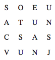

53. BÖLÜM
Bellamy, Langdon’a, “Sana söylemeye çalıştığım gibi, bu piramitte gözün gördüklerinden çok daha fazlası var,” diyordu.
Öyle olduğu belli. Langdon, şu an fermuarı açık duran çantasının içindeki taş piramidin çok daha gizemli göründüğünü itiraf etmek zorundaydı. Çözdüğü mason şifresi, anlamsız bir dizi harften başka bir şey çıkmamıştı.
Karmaşa.

Langdon uzunca bir süre harf dizinine bakıp, anlam çıkarmaya -gizli kelimeler, anagramlar, herhangi bir ipucu- çalıştı ama hiçbir şey bulamadı.
Bellamy, “Mason Piramidi’nin, sırlarını pek çok örtünün altında sakladığı söylenir,” diye açıkladı. “Her bir perdeyi kaldırdığında, altından bir başkası çıkar. Bu harşeri ortaya çıkarmış olsan da başka bir katmanı daha açmadan sana hiçbir şey söylemeyecektir. Elbette bunu ancak kapak taşını elinde bulunduran kişi yapabilir. Sanırım kapak taşında, piramidin nasıl deşifre edildiğini gösteren bir tarif var.”
Langdon masada duran küp şeklindeki pakete baktı. Bellamy’nin söylediklerinden, kapak taşı ile piramidin “parçalı şifre” olduğunu anlıyordu, yani kısımlara ayrılmış bir kodlama biçimi. Güvenlik planı Antik Yunan’da icat edilmiş olsa da modern kriptologlar parçalı şifreyi hep kullanırlardı. Yunanlılar gizli bir bilgiyi saklamak istediklerinde bunu bir kil tabletin üzerine yazarlar, sonra onu kırıp her bir parçasını başka bir yerde saklarlardı. Sadece tüm parçalar bir araya getirildiğinde bu sır okunabilirdi. Symbolon46 denilen bu türden yazılı kil tabletler, aslında günümüzde kullanılan symbol47 kelimesinin kökünü oluşturuyordu.
Bellamy, “Robert,” dedi. “Bu piramit ve kapak taşı, sırrın güvenliğini sağlamak için nesillerdir birbirlerinden ayrı duruyorlardı.” Ses tonundan, kederlendiği anlaşılıyordu. “Ama bu akşam, parçalar tehlikeli olacak derecede birbirine yaklaştı. Bunu söylememe gerek yok, biliyorum... ama bu piramidin birleştirilmemesini sağlamak bizim görevimiz.”
Langdon, Bellamy’nin acıklı hikâyesini biraz abartılı buldu. Kapak taşıyla piramitten mi bahsediyor... yoksa ateşleyiciyle nükleer bombadan mı? Bellamy’nin iddialarını kabul etmekte hâlâ zorlanıyordu ama bunun pek de önemi yoktu. “Eğer bu Mason Piramidi’yse ve yazılarda bir şekilde eski bilginin yerini tarif ediyorsa bile, bu bilgi bahsedilen türden bir gücü nasıl nakledebilir?”
“Peter bana ikna edilmesi güç bir adam olduğunu söylerdi; ispatları söylentilere tercih eden bir akademisyen.”
Artık sabrı taşan Langdon, “Şimdi sen buna inandığını mı söylüyorsun?” diye sordu. “Çağdaş ve eğitimli bir adam oluşuna saygı duyuyorum, ama böyle bir şeye nasıl inanırsın?”
Bellamy hoşgörüyle tebessüm etti. “Farmasonluk bana, insanın anlama kapasitesinin üstündeki şeylere derin bir saygı duymayı öğretti. Sırf kulağa mucizevi geliyor diye, bir fikri hemen reddetmemeyi öğrendim.”